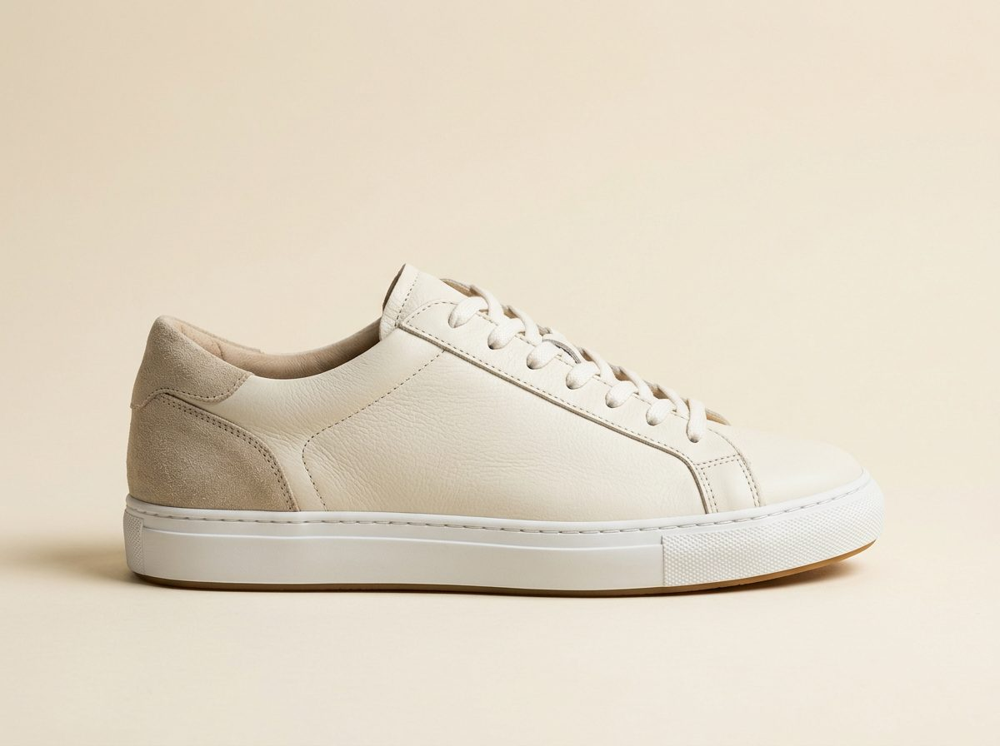
Low-top
EverydayShoes that sit below the ankle. Their versatile silhouette works well with jeans, shorts, skirts and casual outfits.
- Height
- Below the ankle bone
- Look
- Clean, light, easy to style
- Pair with
- Jeans, shorts, skirts
More than shoes. A culture, a statement, a way of life.
Exploring the design, history, culture, comfort, and creativity behind sneakers.
A blog by Aashna A Shiju Fashion Communication | NIFT Hyderabad
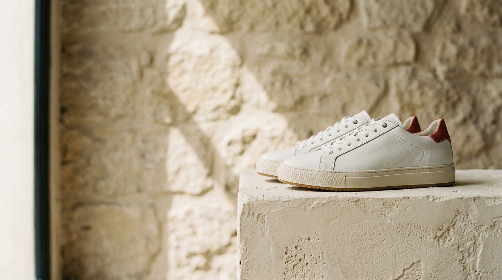
Sneakers are more than just footwear. They represent comfort, creativity, identity, and culture.
From timeless classics to bold contemporary designs, sneakers have become an essential part of the modern wardrobe. Join me as I explore their history, styles, construction, and influence on fashion.
This blog is my Fashion Basics project as a first-year Fashion Communication student. Each section looks at sneakers from a different angle: what they are, where they came from, the shapes they take, how we style them, how they are built, and how to make a good pair last.
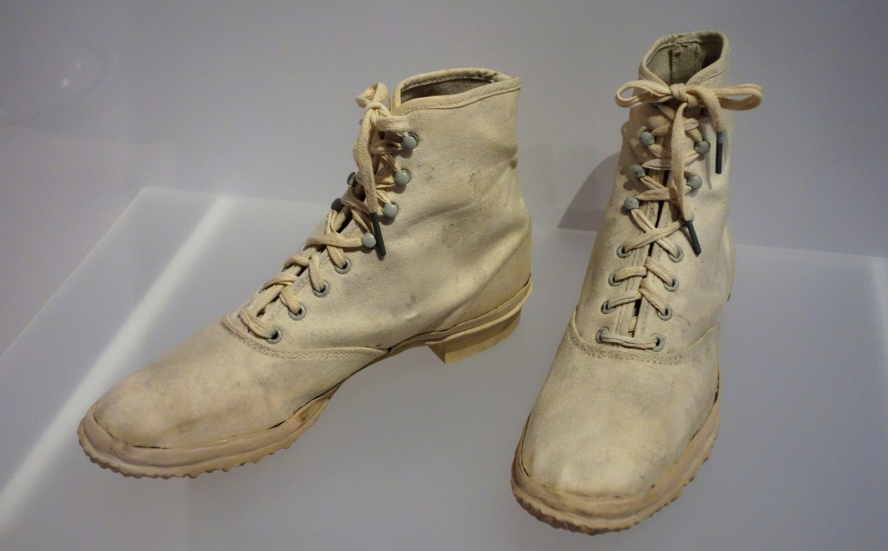
From rubber experiments to basketball courts and city streets.
Read the timeline →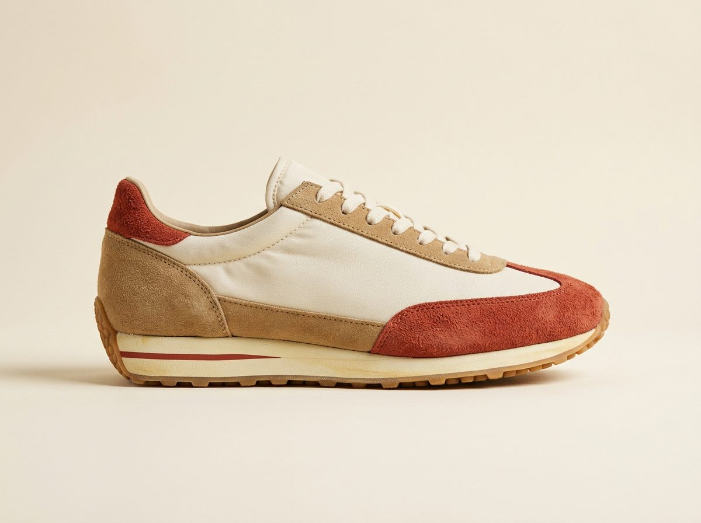
Six silhouettes, from everyday low-tops to statement platforms.
See the styles →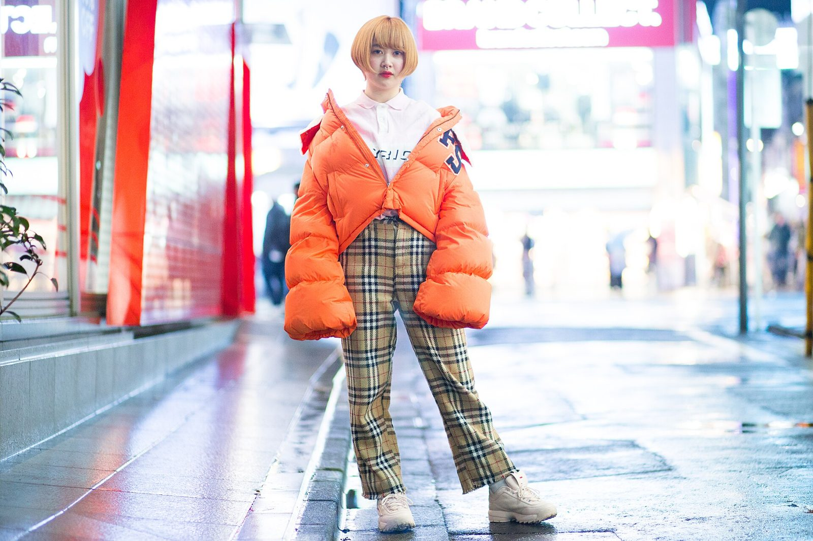
How streetwear, music and personal style made sneakers fashion.
Get styled →A flexible sole, a soft upper, and room for endless reinvention.
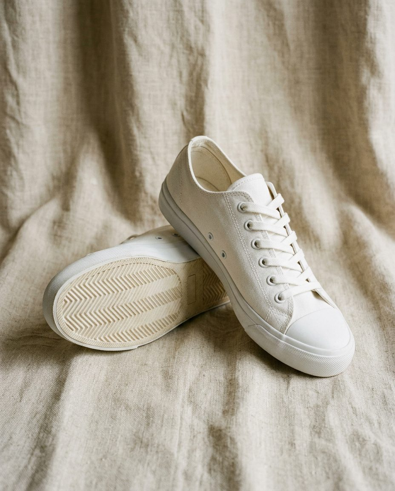
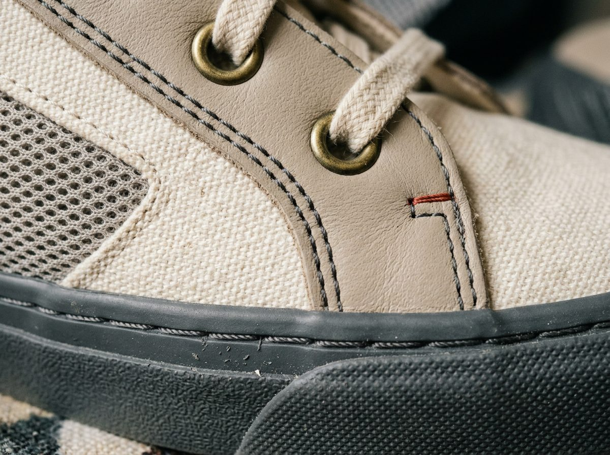
Sneakers are a type of footwear with a flexible sole, usually made of rubber or foam, and an upper made from materials such as canvas, mesh, leather or synthetic fabrics. Depending on how they are built, they can be designed for sport, exercise, walking or simply everyday wear.
They began as functional shoes. Rubber soles gave grip and moved quietly, and lightweight uppers let feet bend and breathe. Over the twentieth century, athletes, musicians, skaters and young people adopted them, and sneakers slowly moved from the sports field into everyday fashion.
Today their appeal comes from three things. They are versatile: one pair can work with jeans, a dress or a suit. They are comfortable, built to be worn all day. And they are expressive: colour, shape and material let the wearer say something about who they are.
“One shoe, countless ways to express yourself.”
How a rubber-soled sports shoe became one of the most worn objects in the world.
Natural rubber softened in heat and cracked in cold, which made it hard to use in shoes. Better processing changed that. In 1844 the American inventor Charles Goodyear was granted a US patent for vulcanisation, which uses sulphur and heat to make rubber stronger and more stable.[10]
Durable rubber made rubber-soled canvas shoes possible. By the late 1800s, pairs like the one shown here were being made for leisure and sport.
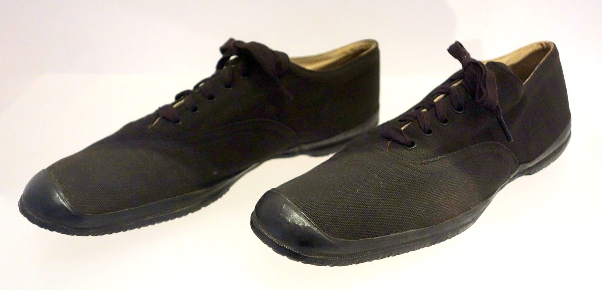
As organised sport grew, manufacturers began designing footwear for particular activities such as tennis, track and the new game of basketball, invented in 1891.[2] Canvas uppers kept shoes light, and rubber soles gave grip on courts and floors.
In 1917 Converse introduced the Non-Skid, one of the first shoes designed specifically for basketball.[1] In 1919, after coaches asked for a darker canvas that hid wear, Converse released it in brown and named it the All Star.[1]
Charles “Chuck” Taylor joined Converse as a salesman in 1922, and his signature was added to the shoe in 1934.[1]
The photo shows a canvas basketball high-top from the same period, made by Keds. It is not a Converse shoe.
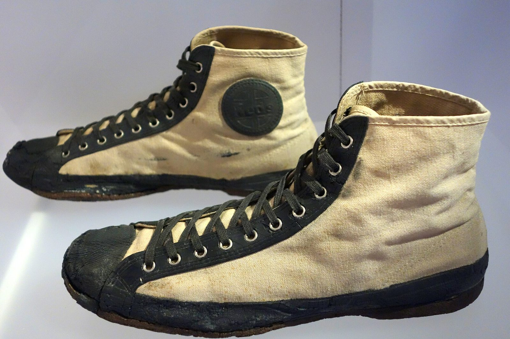
Sneakers spread far beyond the gym. Converse introduced a low-top All Star in 1957, and it became popular in California.[1] Skateboarders adopted canvas low-tops, and musicians wore them on stage in the 1950s and 1960s.[2]
Running, basketball, skateboarding, music and youth culture each brought sneakers to new audiences. Specialist running shoes, signature basketball shoes and skate shoes multiplied the styles on offer.
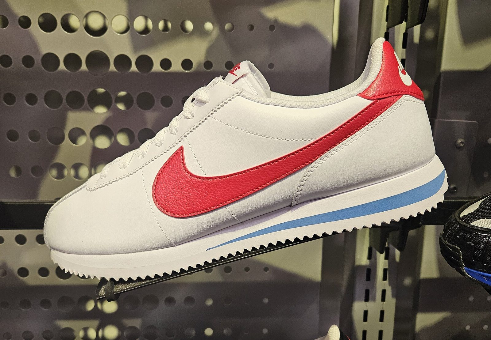
Sneakers now sit at the centre of streetwear and appear in designer collections and everyday wardrobes. Converse, for example, entered its first fashion collaboration in 2000, with designer John Richmond.[1]
Old designs keep coming back too. In 2026 Vogue India described the canvas high-top as an “anti-hype” favourite, more than a century after it first appeared on basketball courts.[9]
Six silhouettes every sneaker lover should be able to recognise.

Shoes that sit below the ankle. Their versatile silhouette works well with jeans, shorts, skirts and casual outfits.
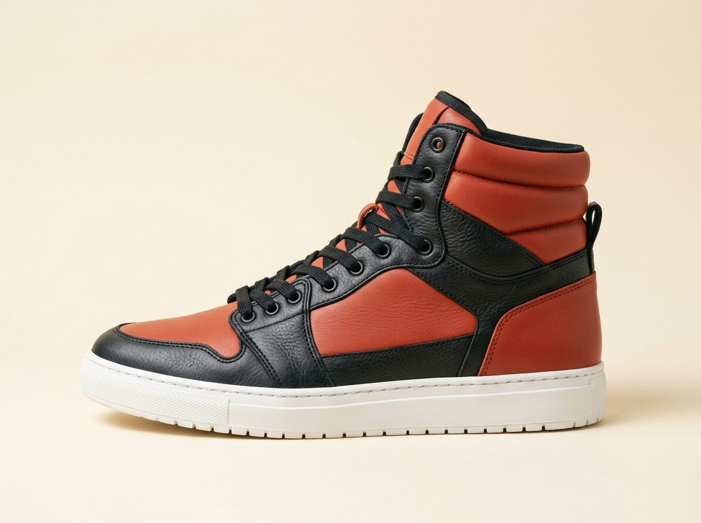
Shoes that extend above the ankle. They are associated with basketball heritage and streetwear.
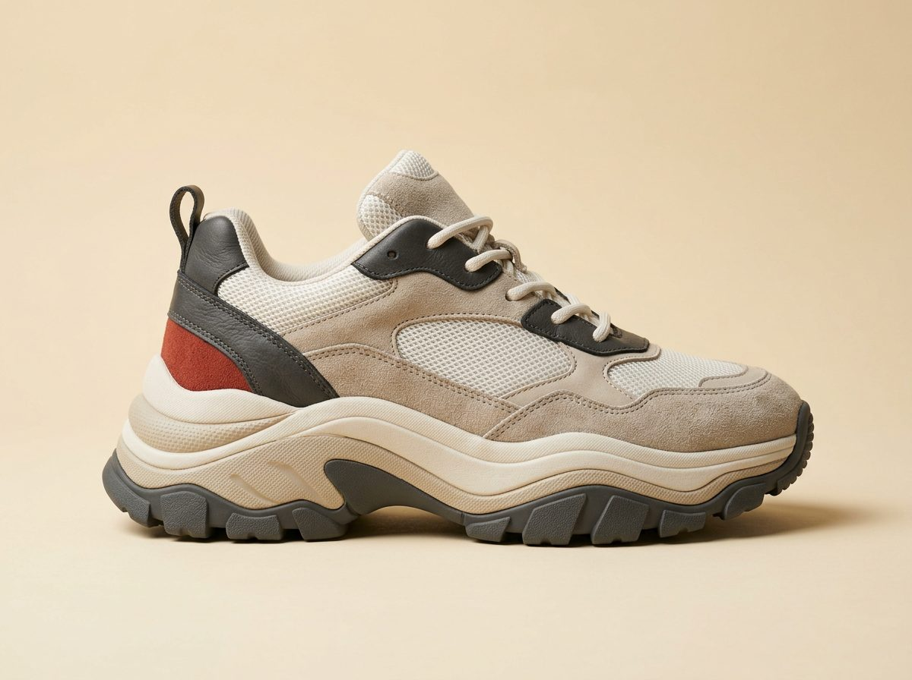
Shoes with thick, substantial soles that create a bold silhouette and make a strong fashion statement.
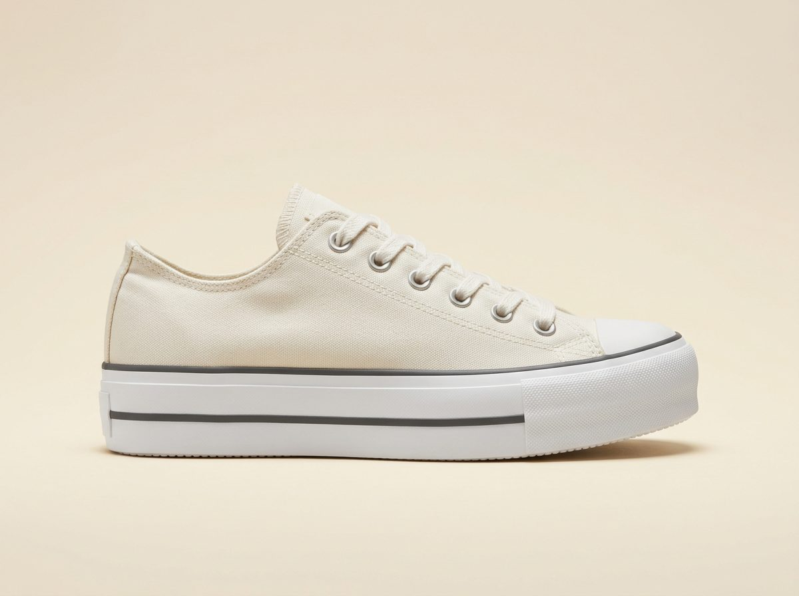
Shoes with elevated soles that add height and create a distinctive profile.
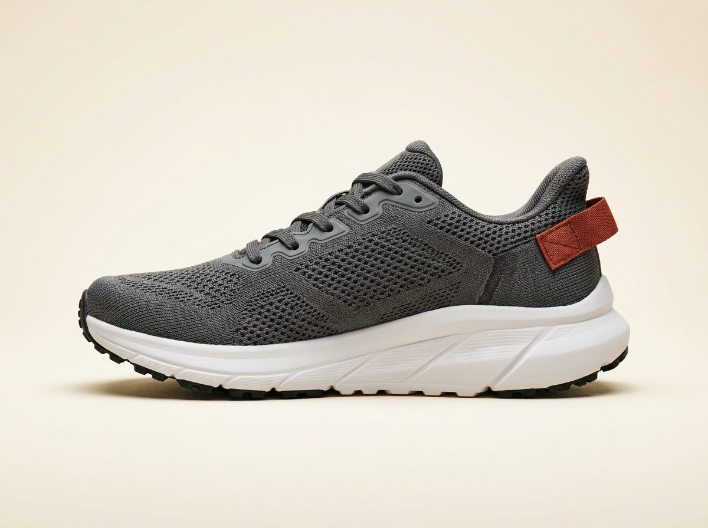
Footwear designed for running, commonly featuring lightweight uppers, cushioning, and outsoles suited to the activity.
Modern shoes inspired by earlier designs, often featuring vintage colours, classic shapes, suede or nylon.
All six style illustrations are AI-generated product images made for this blog. They show general styles, not real branded products.
Once kept for sport, sneakers now decide the mood of an outfit.
Sneakers changed what “dressed up” means. Many people now choose their shoes first and build the outfit around them. A pair can make a formal look relaxed, give a simple look some edge, or tie colours together.
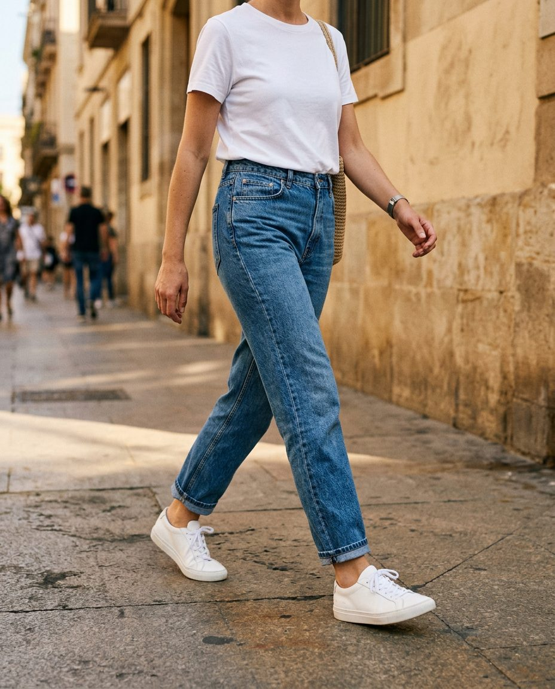
White sneakers with jeans and a T-shirt. The simplest uniform there is, and it works because the clean white shoe brightens everything around it.
AI-generated image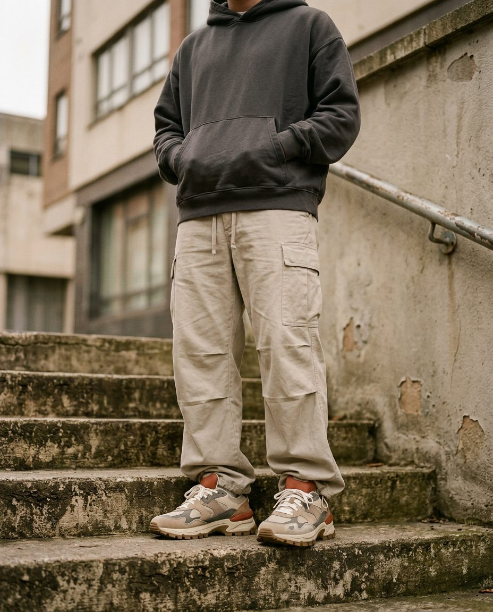
Chunky sneakers with oversized clothing. A heavy sole balances loose, roomy layers so the outfit doesn't look like it is swallowing the wearer.
AI-generated image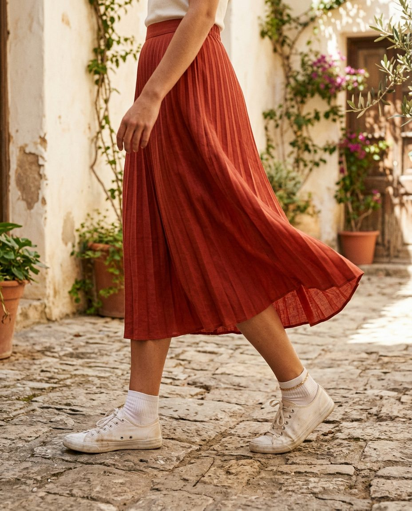
Sneakers with dresses or skirts. Flat, sporty shoes against a soft pleated skirt create contrast and make the look feel modern and wearable.
AI-generated image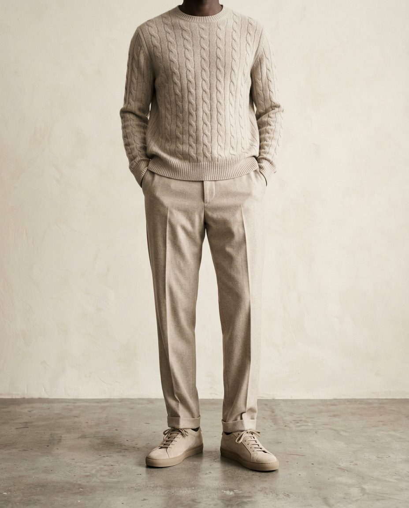
Sneakers in the same colour family as the clothes. Here, beige suede meets beige knitwear and tailoring, so the eye travels in one long, unbroken line.
AI-generated imageEvery sneaker is a set of layers, and each layer has its own job.
Designers combine materials to balance comfort, durability, weight and appearance.
A little care keeps a pair looking good and out of the bin for longer.
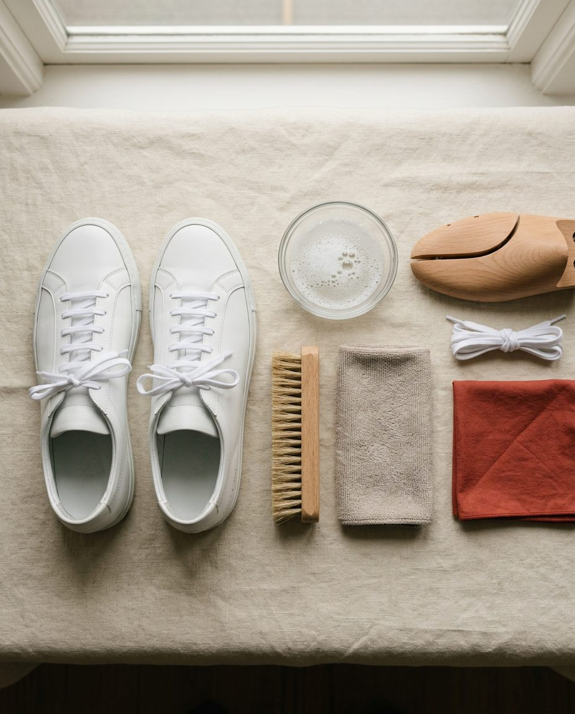
Dirt, sweat and heat slowly break down the materials in a shoe. Regular, gentle cleaning protects the upper, keeps the sole gripping and stops stains from setting. Caring for sneakers also saves money and cuts waste, because a pair that lasts longer doesn't need replacing as soon.[11]
Sneakers have travelled a long way from their origins in functional footwear to their place in modern fashion. They bring together design, technology, comfort, sport, and culture in one everyday object.
Their variety of shapes, colours, materials, and construction shows how design can influence both function and appearance.
Whether simple or bold, classic or contemporary, every pair tells a story through the people who design, wear, and transform it.
Step into your own style.
Step into your own style.
Research sources and images used in this blog. Web sources accessed 24 October 2026.
AI-generated images (15). The homepage hero, both images in Section 01, all six style images in Section 03, all four looks in Section 04, the care image in Section 06 and the closing image were generated for this blog with Google's Gemini 3.1 Flash Image model in Figma in October 2026, from prompts I wrote. They are illustrations, not photographs of real people or real branded products.
The sneaker anatomy diagram in Section 05 was drawn for this blog.